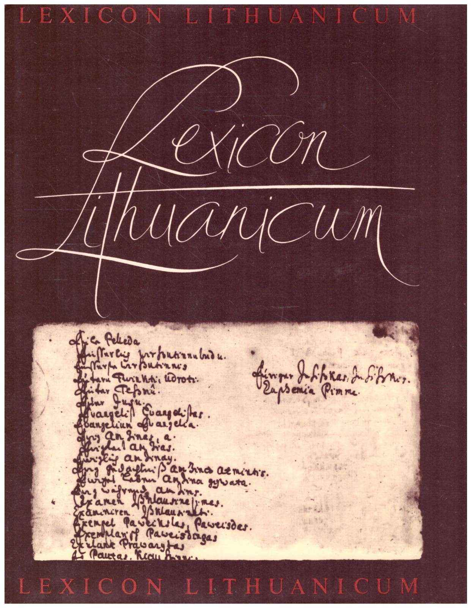

About Lexicon Lithuanicum
This page documents the 17th-century German–Lithuanian manuscript dictionary "Lexicon Lithuanicum" in three languages.

Rankraštinis XVII a. vokiečių-lietuvių kalbų žodynas. Santrauka: Leidinyje spausdinamas vieno pirmųjų leksikografijos paminklų – rankraštinio anoniminio XVII a. vidurio vokiečių-lietuvių kalbų žodyno „Lexicon Lithuanicum“. Skelbiamas rankraštis „Lexicon Lithuanicum“ laikomas Lietuvos mokslų akademijos Vrublevskių bibliotekos rankraščių skyriuje. Jis buvo surastas Rytų Prūsijoje, apgriautoje Laukstyčių (vok. Lochstädt) pilyje, kur Antrojo pasaulinio karo pabaigoje buvo slepiama Prūsijos valstybinio archyvo Karaliaučiuje dalis fondų. Žodyną surado 1945 m. pabaigoje Povilo Pakarklio ir Juozo Jurginio ekspedicija lituanistikos vertybėms nuo sunykimo išgelbėti. Išeivijos leidinio Draugas straipsnis apie „Lexicon Lithuanicum“ Handwritten German–Lithuanian dictionary of the 17th century. Abstract: The publication prints one of the first monuments of lexicography – the anonymous mid-17th-century German–Lithuanian dictionary manuscript "Lexicon Lithuanicum". The published manuscript is preserved in the Vrublevski Library of the Lithuanian Academy of Sciences. It was found in East Prussia, in the ruined Lochstädt castle, where part of the Prussian State Archive collections were hidden near the end of World War II. The dictionary was discovered at the end of 1945 by the expedition of Povilas Pakarklis and Juozas Jurginis to save Lithuanian cultural heritage from destruction. Handschriftliches deutsch-litauisches Wörterbuch des 17. Jahrhunderts. Zusammenfassung: Die vorliegende Publikation enthält den Druck eines der ältesten Denkmäler der Lexikographie – des anonymen deutsch-litauischen Wörterbuchmanuskripts „Lexicon Lithuanicum“ aus der Mitte des 17. Jahrhunderts. Das Manuskript wurde in Ostpreußen, in den Ruinen des Schlosses Lochstädt, entdeckt, wo gegen Ende des Zweiten Weltkriegs ein Teil der Bestände des Preußischen Staatsarchivs Königsberg ausgelagert worden war. Ende des Jahres 1945 wurde das Wörterbuch von der Expedition unter der Leitung von Povilas Pakarklis und Juozas Jurginis aufgefunden, die den Auftrag hatte, litauische Kulturgüter und Zeugnisse der Litauistik vor der Zerstörung zu bewahren.Lietuviškai
English
Deutsch